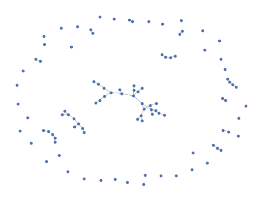
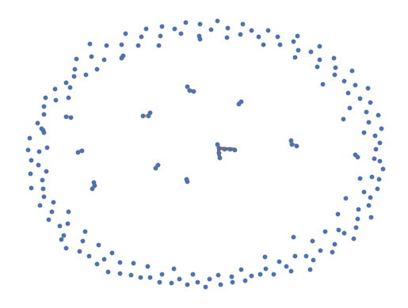
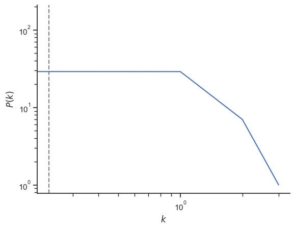
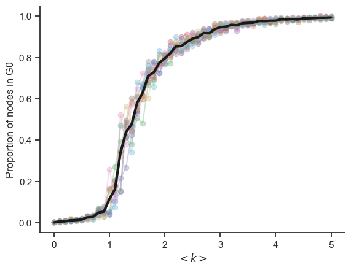
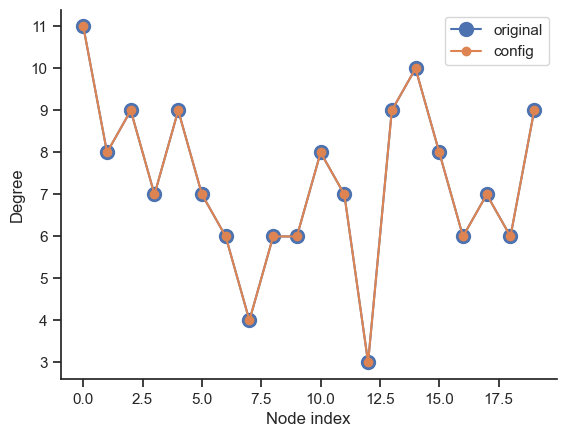
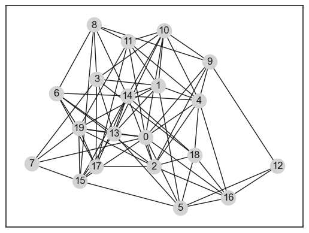
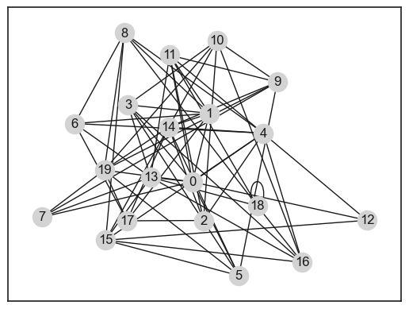

Erdos-Renyi random networks
Contents
4. Erdos-Renyi random networks¶
import random
import networkx as nx
import numpy as np
import seaborn as sb
import matplotlib.pyplot as plt
sb.set_theme(style="ticks", context="notebook")
4.1. Write a random graph generator¶
def random_graph(N, p):
G = nx.Graph()
nodes = range(N)
edges = []
for i in nodes:
for j in nodes[:i]:
if random.random() < p:
edges.append([i,j])
G.add_nodes_from(nodes)
G.add_edges_from(edges)
return G
N = 100
p = 1 / N
G = random_graph(N, p)
params = {
"node_size": 10,
"with_labels": False,
"edge_color": "silver",
"node_color": "b",
}
nx.draw_networkx(G, **params)
sb.despine(bottom=True, left=True)

4.2. Analyse characteristics¶
N = 200
p = 0.2/N
G = nx.erdos_renyi_graph(N, p, seed=1)
params = {
"node_size": 10,
"with_labels": False,
"edge_color": "silver",
"node_color": "b",
}
pos = nx.spring_layout(G)
nx.draw_networkx(G, pos=pos, **params)
# identify largest connected component
Gcc = sorted(nx.connected_components(G), key=len, reverse=True)
G0 = G.subgraph(Gcc[0])
# highlight largest connected component
nx.draw_networkx_edges(G0, pos=pos, width=3.0, edge_color="r")
# draw other connected components
for Gi in Gcc[1:]:
if len(Gi) > 1:
nx.draw_networkx_edges(G.subgraph(Gi), pos, alpha=0.4, width=3.0, edge_color="r")
sb.despine(bottom=True, left=True)

print(f"Connected: {nx.is_connected(G)}")
print(f"# connected components: {len(list(nx.connected_components(G)))}")
print()
print(f"Size of largest connected component: {len(G0)}")
print(f"Prop. of nodes in it: {len(G0) / N:.2f}")
print()
degree_sequence = sorted((d for n, d in G.degree()), reverse=True)
print(f"Average degree: {np.average(degree_sequence)}")
print(f"Clustering coefficient: {nx.average_clustering(G)}")
Connected: False
# connected components: 177
Size of largest connected component: 7
Prop. of nodes in it: 0.04
Average degree: 0.23
Clustering coefficient: 0.0
deg, counts = np.unique(degree_sequence, return_counts=True)
fig, ax = plt.subplots()
ax.plot(deg, counts)
ax.axvline(np.average(degree_sequence), ls="--", c="grey", zorder=-1)
ax.set_xlabel("$k$")
ax.set_ylabel("$P(k)$")
plt.yscale("log")
plt.xscale("log")
sb.despine()

4.3. Vary the degree k¶
N = 500 # number of nodes
ks = np.arange(0, 5.1, 0.1) # avg degrees
ps = ks / (N - 1) # corresponding wiring probabilities
n_reps = 10
# props = []
props_arr = np.zeros((len(ps), n_reps))
for i, p in enumerate(ps):
for rep in range(n_reps):
G = nx.erdos_renyi_graph(n=N, p=p)
# identify largest connected component
Gcc = sorted(nx.connected_components(G), key=len, reverse=True)
G0 = G.subgraph(Gcc[0])
prop = len(G0) / N
props_arr[i, rep] = prop
fig, ax = plt.subplots()
ax.plot(ks, props_arr, "-o", alpha=0.3)
ax.plot(ks, np.average(props_arr, axis=1), "k-", lw=3)
ax.set_ylabel("Proportion of nodes in G0")
ax.set_xlabel(r"$< k >$")
sb.despine()

4.4. Configuration model¶
N = 20
p = 6 / N
G = random_graph(N, p)
degree_sequence = [d for n, d in G.degree()]
deg, counts = np.unique(degree_sequence, return_counts=True)
fig, ax = plt.subplots()
ax.plot(deg, counts / N)
ax.axvline(np.average(degree_sequence), ls="--", c="grey", zorder=-1)
ax.set_xlabel("$k$")
ax.set_ylabel("$P(k)$")
plt.yscale("log")
plt.xscale("log")
sb.despine()

G_conf = nx.configuration_model(degree_sequence)
G_conf = nx.Graph(G_conf)
degree_sequence_conf = [d for n, d in G.degree()]
deg_conf, counts_conf = np.unique(degree_sequence_conf, return_counts=True)
fig, ax = plt.subplots()
ax.plot(degree_sequence, "o-", ms=10, label="original")
ax.plot(degree_sequence_conf, "o-", label="config")
ax.set_xlabel("Node index")
ax.set_ylabel("Degree")
#plt.yscale("log")
#plt.xscale("log")
ax.legend()
sb.despine()

print(G)
print(G_conf)
Graph with 20 nodes and 73 edges
Graph with 20 nodes and 63 edges
pos = nx.spring_layout(G)
pos = nx.spring_layout(G, seed=1)
nx.draw_networkx(G, pos=pos, node_color="lightgrey")

nx.draw_networkx(G_conf, pos=pos, node_color="lightgrey")

#G_conf = G_conf.remove_edges_from(nx.selfloop_edges(G_conf))